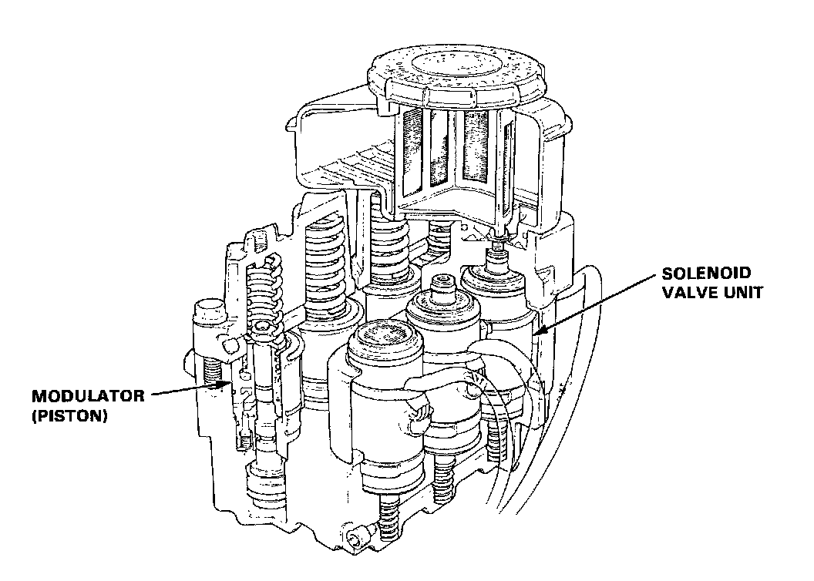

Hydraulic Control Assembly - Antilock Brakes: Description and Operation

Modulators and solenoid valves for each wheel are integrated in the modulator unit.
The modulators for front and rear brakes are of independent construction.
The solenoid valve features quick response (5 ms or less).
The inlet and outlet valves are integrated in the solenoid valve unit.